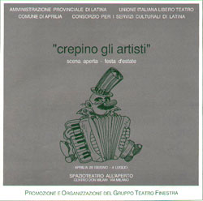

|  |
scena aperta - festa d'estate
Aprilia 28 Giugno - 4 Luglio
SPAZIOTEATRO ALL’ APERTO
CENTRO DON MILANI VIA MILANO
PROGRAMMA
28 GIUGNO ore 18:30
Inaugurazione
MOSTRA FOTOGRAFICA "Aprilia: ricordi e silenzi.Frammenti" di Luciano Tramannoni
MOSTRA DI PITTURA SCULTURA GRAFICA INCISIONE dell'Ass. Arti Visive "Il Melograno". Esposizioni di Sergio Ran, Ornella Boccuzzi, Massimo Pompeo, Alberto Serarcangeli.
28 GIUGNO ore 19:30
Spazioconcerto
I GRUPPI DELLA CITTÀ
29 GIUGNO ore 21:15
Gruppo Teatro La Mano
STRIP-TEASE due atti unici
KAROL di Slawomir Mrozek
Con Domenico Barbonetti, Aldo Cardini, Fabrizio Rinaldi
30 GIUGNO ore 21:15
Sotto le stelle del jazz
JAZZ QUARTET
Salvatore Cataldo: Basso
Alberto Dori: Batteria
Riccardo Calcari: Vibrafono
Claudio Micheli: Chitarra
1 LUGLIO ore 21:30
Mimoteatro
MOSAICO MIMO Composizioni sceniche di A. Belmonte
Con Andrea Belmonte e la partecipazione e la collaborazione di Mauro Deluse
2 LUGLIO ore 21:15
Il Teatrone
LA CASA SULLA FRONTIERA Farsa in due atti di Slawomir Mrozek
Con Enrico Cappelli, Antonella Consolandi, Daniela Faina, Eliana Gallo, Enrico Lopez, Aldo Cardini, Fausto Pro, Fabrizio Rinaldi
3 LUGLIO ore 21:15
Interpretazioni di una notte di luglio
SOLISTI CLASSICI
Gabriella Diatto: Violino
Andrea Gianolla: Clarinetto
Denis Negroponte: Fisarmonica
Rosanna Salerno: Pianoforte
Loris Zecchin: Chitarra
4 LUGLIO ore 21:30
Commedianti
MA É AMMORE CHESTO? di L. Petrillo
Con Leonardo Petrillo e Gianni Cannavacciuolo
| Leonardo Petrillo e Gianni Cannavacciuolo |
All'interno dello Spazioteatro
VIDEO
"Comic slalom" produzione G.T. Comic
"Occhi elettrici" e "Setia" produzione CONSORZIO BIBLIOTECHE MONTI LEPINI